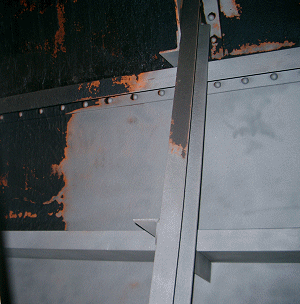

Die Oberflächenvorbereitung umfasst Reinigungsarbeiten von nichtbeschichteten Untergründen sowie die Entschichtung von Stahlbauten. Dabei werden chemische (zum Beispiel Abbeizen) und mechanische Verfahren (zum Beispiel Klopfen, Strahlen) angewandt. Bei Strahlarbeiten sind eine Reihe spezieller Schutzmaßnahmen zu berücksichtigen.
Problematisch beim Entfernen von Altbeschichtungen sind Gefahrstoffe
in den alten Beschichtungen.